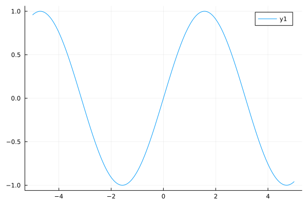
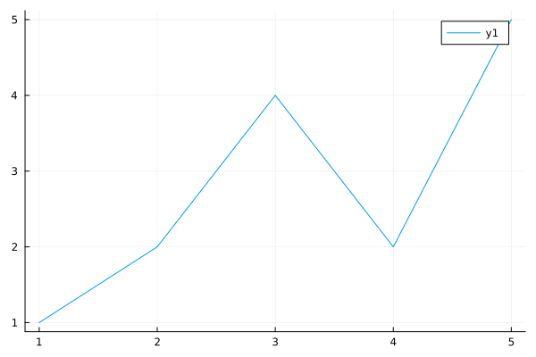
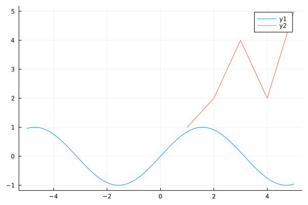

Numerical methods in Julia tutorial
Introduction
Welcome to JuliaTutorial.jl! The aim of this page is to get you quickly started with the Julia programming language.
I think Julia is perhaps the most productive gateway to the world of numerical methods for scientific computing, and I hope this can be a self-contained resource to get you started with Julia, its ecosystem, and exploring numerical methods.
Julia is a scientific programming language comparable to python, matlab, fortran, and R. It was originally created in 2012 by Jeff Bezanson, Stefan Karpinski, Viral Shah (and others) in the MIT Computational Science and Aritifical Intelligence Lab (CSAIL) as an open source project.
Since then, the language has amassed 8000 officially registered packages and become a dominant language for instruction and research in applied math departments at several top research universities, notably MIT and Stanford[]. The Julia community is still small compared to python, but in its niche of numerical computing, it is already very well established.
The primary purpose for creating Julia was solving the "two language problem". This is where a scientific programmer implementing complex algorithms in high-level/abstract languages (commonly python) must then convert or interface this code to a low-level/systems language (commonly C++/fortran) in order to get efficient performance.
Practically speaking, the two language problem means scientists must use C++/fortran (with all their many headaches) to get high performance software or else hope that someone else wrote something relevant in C++/fortran and made a convenient python interface for it such as numpy or scipy.
Julia has arguably solved this problem through JIT (just-in-time) compilation along with host of other design decisions which enable a python-like syntax, but with the capability of C++/fortran speeds. This means we can make, for instance, a linear algebra package in pure Julia and have it run as fast (or sometimes faster[]) than C++/fortran ones such as openBLAS.
This does come at the cost - mostly in added precompilation time when a function is first called. But I believe it is well worth it for most use cases in scientific computing.
Installation
Julia can be installed from its official download page.
It can also be installed via homebrew (on macs) by pasting the following command into a terminal. This command will install the current stable release (currently 1.8.1).
brew install --cask juliaSimply typing julia in a terminal to open a Julia REPL (read-evaluate-print-loop) session. You can use the REPL to evaluate simple Julia expression, manage Julia packages, run shell commands, and access documentation. Additionally, you can run a Julia file in you active directory by typing julia my_julia_program.jl.
Let's open a julia REPL and type print("hello world").
~ % julia
_
_ _ _(_)_ | Documentation: https://docs.julialang.org
(_) | (_) (_) |
_ _ _| |_ __ _ | Type "?" for help, "]?" for Pkg help.
| | | | | | |/ _` | |
| | |_| | | | (_| | | Version 1.8.1 (2022-09-06)
_/ |\__'_|_|_|\__'_| | Official https://julialang.org/ release
|__/ |
julia> print("hello world")
hello worldThe REPL is a great interface for using Julia quickly (to make a fast plot, overview your packages, or do a small calculation), but we will need a robust IDE (Integrated Development Environment) to write more complex code. There are many IDE's for various programming languages including Julia, but the easiest and most fully featured one for Julia is VS Code which we will install in the next section.
Julia, like most actively used software, is under a constant state of development. This means you will find various older and newer versions of Julia out in the wild. These versions are distinguished by a version number, for example, 1.8.1 or 0.7.2.
This release scheme is very common in open source software (know as the semantic versioning specification). The first number indicates a major release. For Julia this was the 1.0.0 release in 2018. 1.0.0 is considered a major milestone for open source development as it typically represents a commitment to major design decisions in the software and a certain amount of stability to what its interface looks like.
The following two numbers are respectively a minor release and patch number. Minor releases are usually every 4-5 months. And patches are released as needed. You can read more about Julia's release process here.
Typically, Julia code written for 1.0.0 will work if run by later versions of Julia (this is known as backwards compatability). However code written for a newer Julia version cannot be assumed to run on an earlier Julia version i.e. it is not forward compatible. This is usually because it incorporates language features which are not parseable by earlier Julia versions.
Practically speaking, if you keep Julia updated to the current stable release, you won't run into version issues, but if you find yourself needing to use many different versions of Julia, for instance, if you want to test the latest releases or want to use a very old package, you can use the juliaup tool to conveniently manage many different Julia versions.
Using Julia in VS Code
VS Code can be installed from its official download page.
It can also be installed via homebrew (on macs).
brew install --cask visual-studio-code
You can then open VS Code by typing code into a terminal.
- The Julia extension can be install by clicking the following extension button in the upper left of VS Code.

- Search for "julia", and then click the blue install button.

Next, let's make a .jl file to edit. Click new file.

And select Julia File to initialize a blank Julia file.

Finally, let's open up a REPL inside of VS Code (called the integrated terminal) using the default hotkey ctrl + J + O.
Congratulations! We are now set-up for working with Julia.

VS Code is designed to be a highly customizable, general purpose IDE which can work with just about any programming languages. It's most powerful features for Julia programming are:
An "extension marketplace" where you can install extensions to the IDE which give it support for various programming languages, color schemes and syntax highlighting, quality of life tools, and many others.
Git integration which lets you quickly and seamlessly push commits to a remote git repository.
Remote development support which lets you develop and run code on other computers with nearly exactly the same workflow as your local machine. This is very convenient for working on cloud computing tools like AWS's EC2 as well as more traditional high performance computing infrastructure.
Writing simple Julia programs
Type 1+1 into the editor window in VS Code and press shift + enter to execute the line your cursor is on (or execute multiple lines if you have them highlighted). By default, it will print an "inline result" next to the code as well as in the REPL session below your editor.

This lends itself to an interactive workflow much like a jupyter notebook. This is the most basic workflow and suitable for writing scripts and exploring data, but if you are doing package development with unit tests and more complicated environments you will want to look at Revise.jl.
While this tutorial is meant to be a self-contained introduction to using the Julia language, I can't realistically guide you through all the in's and out's of its syntax. Here are a list of references in order of increasing time commitment which will be useful to you to pick up the syntax and bridge it with your existing knowledge of python.
- matlab-python-julia cheatsheet - Quick way to see syntax differences between python and Julia for common operations
- The Fast Track to Julia - Overview of the Julia language in one page
- Official Julia languages documentation - Comprehensive overview of the entire language
- Julia for Talented Amateurs - Extensive youtube channel with tutorials on most parts of the language, data analysis, GPU computing, etc
The Julia package manager
Julia packages such as DifferentialEquations.jl or Plots.jl are collections of functions which can be imported to provide additional functionality to your Julia program. They are equivalent to libraries in other languages, for instance, python's numpy and Julia's LinearAlgebra.jl provide similar functionality.
The Julia package manager, Pkg.jl, is itself a package, and it lets us import packages from various locations on the internet and manage them. It is essentially python's pyp and conda/venv all in one.
We can access Pkg.jl in two ways.
This is the less common way, but it can be accessed like any Julia package by typing
using Pkgin either your editor window (withshift+enter) or the REPL. You can then import other packages (here Plots.jl) by typingPkg.add("Plots.jl"). This will download Plots.jl from its official github repo to your~/.julia/packagesfolder and updates your project.toml file in.julia/environments/1.8which contains the default v1.8 environment. You can then access Plots.jl functions at any time by runningusing Plots.jlin Julia.The more common way is using the built in REPL interface. Type
]into your REPL window. Thejulia>prompt will change into(@v1.8) pkg>indicating it now accepts Pkg.jl functions (use backspace to return tojulia>). We can typeadd Plotsto do the same thing we did above. In addition toaddyou can alsoremove/rmpackages, list all your current packages withstatus/st, or run unit tests for the packagetest Plots.
Pkg.jl is not the only tool with a nice REPL interface. We can access the documentation for a function or function call by typing ? which will change julia> into a help?> prompt. Copy and paste code you want to know more about there to get its docstring, examples, and often a list of similar functions. Try pasting print("help me!") into it.
Shell commands can also be called from the Julia REPL by typing ; to get shell>. Typical shell commands like ls or cd work here exactly as they do in an external terminal.
Plotting in Julia
Creating plots is probably the most fundamental thing you can do in scientific computing and it is also probably the quickest and most fun way to learn Julia.
To make a plot in Julia, run the following.
using Plots
plot(sin)
We can also call plot on an array.
plot([1,2,4,2,5]) Or put one plot on top of another by calling plot!. In Julia, it is convention to put a "!" after a function which modifies data. In this case, plot!([1,2,4,2,5]) writes over our previous plot(sin).
plot(sin)
plot!([1,2,4,2,5])
Let's take a minute to unpack the function call plot(sin). The function plot is explicitly exported from the "Plots.jl" package, so we do not need to write Plots.plot to specify it (though we could if we if we were working with several different plotting packages at once).
This function consists of many "sub-functions" known as "methods" which are specialized to different arguments for the function. When you call the function plot(sin), Julia sees that you called plot on a single argument sin of type Function (functions are treated as just another data type in Julia such as Int64, FLoat64, etc). It can then use a method of plot which calls the function sin on a few values (here -5 to 5) and displays them. In contrast, plot([1,2,4,2,5]) uses a slightly different method where it just displays the values in an array.
!!! "Multiple dispatch and polymorphism"
Being able to infer what method to call based on the types of arguments is known as "multiple dispatch" and it is the core design feature of the Julia language. It let's us have a ton of flexibility into a single function call such as plot.
The rough equivalent of multiple dispatch in other languages is function overloading (in C/C++) or objects in object oriented language (such as python and C++). The main purpose of multiple dispatch or object-oriented development is to create "polymorphism" in our program.
Without using polymorphism we would be forced to write an ugly interface like plot_array and plot_function which would be extremely difficult for anyone to remember, and if we wanted to change anything about how we plot in general, we'd have to rewrite the code for every single one of such functions.
allows us to write a single function and have it "do" as many things as possible with us having to write as little code as possible.
Making a linear solver with LU decomposition
Let's write our first numerical algorithm! There are many candidates for
-Introduce this project -Motivate the use of julia -speed -community -expressivness -Ecosystem -DiffEq.jl -Plotting packages -Resources -Cheatsheet for python -Julia for talented amateurs -Getting started -Package manager -Installation -Main syntax -Plotting -LU system -Homotopy continuation